欧游札记之意大利朝圣(Day14罗马-尾声)

Day 13罗马
不知不觉已经到了罗马景点行程的最后一天，是时候应应景将一些旅游团必去的旅游景点排到日程上来了，比如罗马斗兽场、古罗马遗址等等。
去斗兽场的路上，经过圣伯多禄锁链教堂时顺便进去瞻仰了一下号称基督教神迹之一的圣彼得被囚禁时所戴的锁链，只见一条其貌不扬的铁锁链被恭恭敬敬地供奉在祭坛中央的壁龛里，承载着基督徒们对圣人神迹的敬畏和敬仰。而相对我们这些无神论者来说，教堂里更吸引我们的是米开朗其罗大师的另一尊作品“摩西像”，此雕像是用极佳大理石雕刻而成光泽柔润，摩西头上长角，手里抱着十诫，略带愤恨地望向前方，已看不到当时带领希伯来人逃离古埃及法老奴役时的那种执着和坚毅。 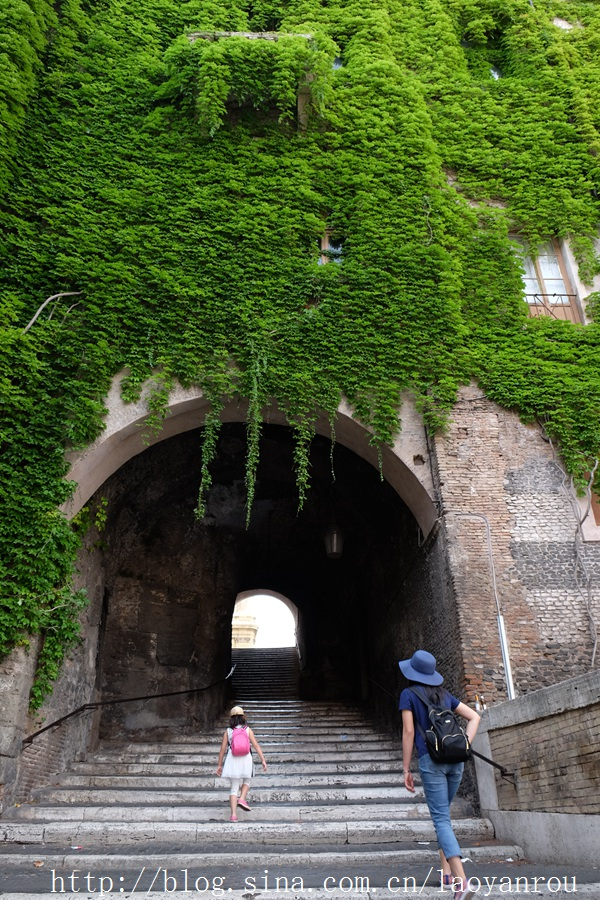 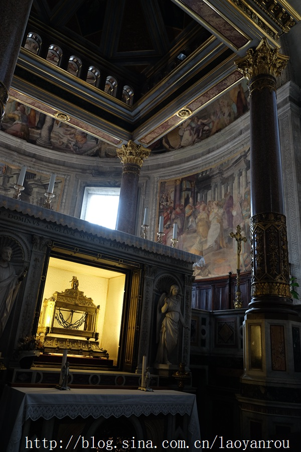 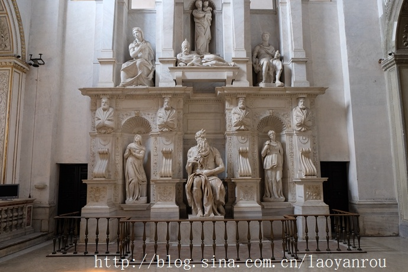 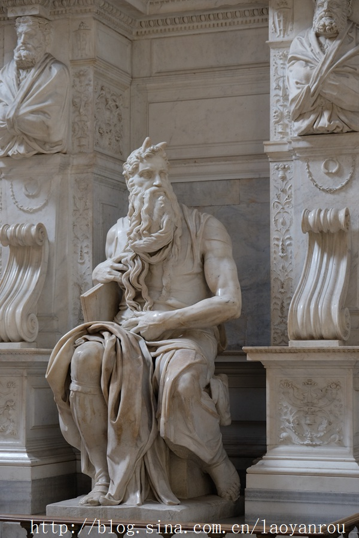 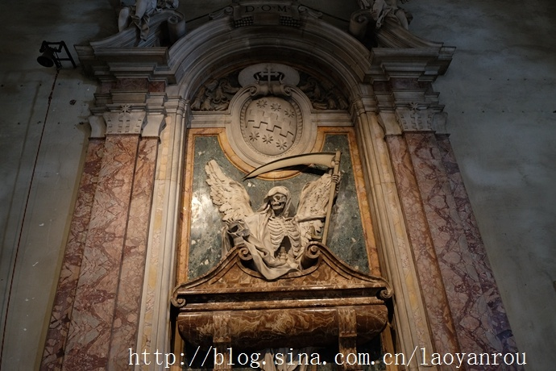
远远望去，大名鼎鼎的罗马斗兽场确实无论从规模还是形制上均可堪称古罗马建筑艺术的奇迹之一，也多亏了无数文物保护专家和工作者的修缮和保养才能确保其至今仍屹立不倒。姑且不论斗兽场最初是封建奴隶主为满足丧心病狂嗜血变态爱好而兴建的血腥游乐场，也不提著名角斗士斯巴达克正是从这里开始带领被压迫的九万多罗马奴隶与罗马封建奴隶制度进行斗争的，仅从它本身的建筑艺术价值来看，整个斗兽场其实是一座椭圆形占地达两万多平米的混凝土建筑，包括四层看台及三层不同高度的环形券廊及中央表演区，最高峰时可同时容纳高达九万多人的罗马贵族、奴隶主及自由民众观看血腥残酷的人兽大战或人人厮杀，斗兽场中央表演区的地下是中空的，布满了管道、坑道和洞口以隐藏猛兽和角斗士，必要时甚至还能引水进来形成湖面模拟海战表演！令人啧啧称奇的是其三层八十拱门的分区入场设计竟然能够保证全场观众即使在混乱中也能在十分钟内疏散完毕。相比于我们在法国阿尔勒看到的斗兽场和意大利维罗纳的斗兽场来说简直是大巫见小巫，称其为全世界斗兽场的鼻祖也毫不为过。 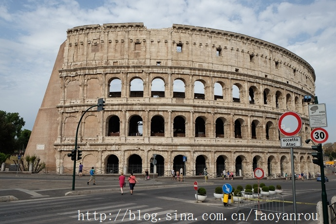 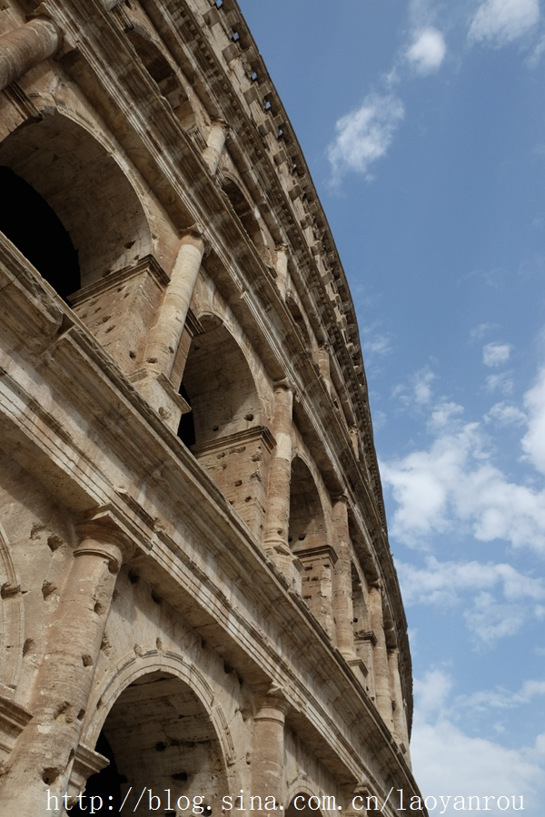 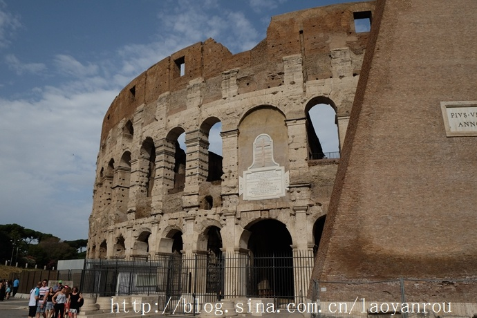 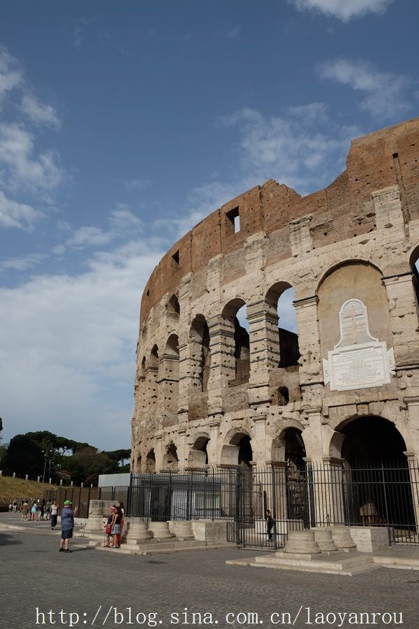
古罗马政治、宗教及文化中心的古罗马广场遗址与斗兽场比邻而建，这里是上天留给世人以一瞥当时繁荣盛世的最重要的遗迹之一。但如果像我们一样没做任何功课就匆匆到访的话，恐怕就会产生和我们一样的感觉，整个广场如同圆明园一般就是好大一片残垣断壁，除了保存相对较为完好的凯旋门、几根神庙石柱和部分残存的墙壁以外，压根看不出哪里是哪里，据说还要买一本图册将遗迹现状与复原图重叠起来指引参观才能稍微对广场的原貌有较为深刻的印象，也难为罗马人在两千多年的战乱纷争、人为破坏和自然损毁中将这些遗迹保留至今，使得我们多少对古罗马帝国两千多年前的无比荣耀和辉煌有所感同身受。 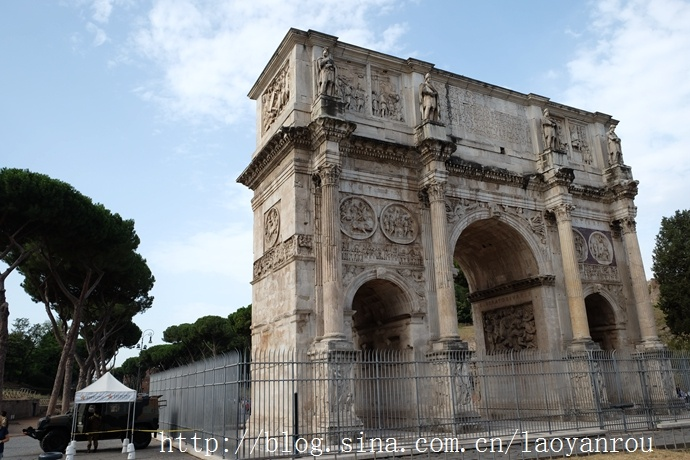 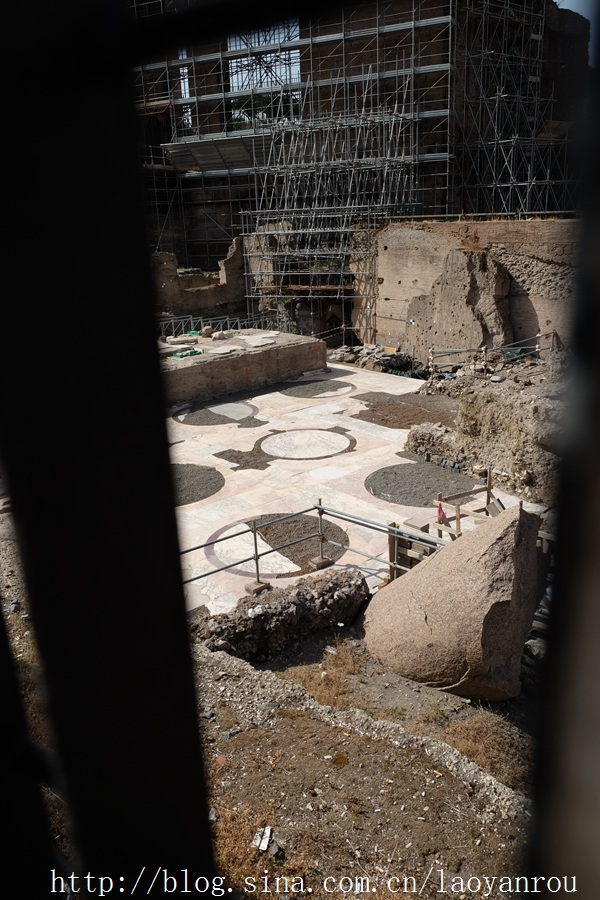 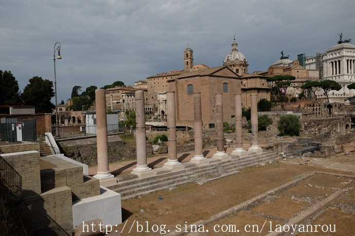 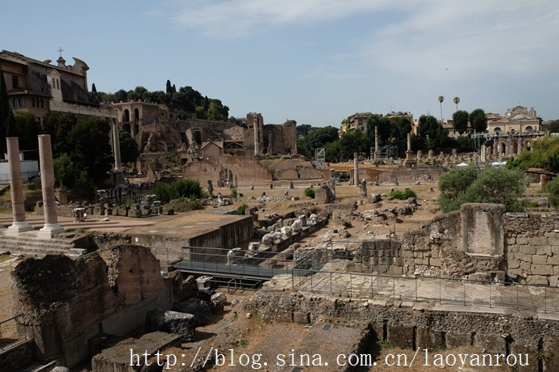 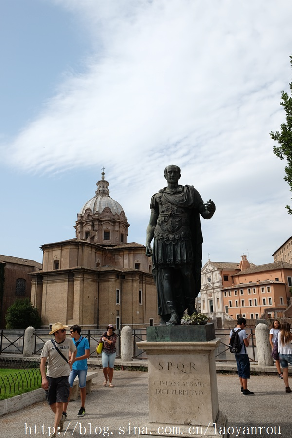 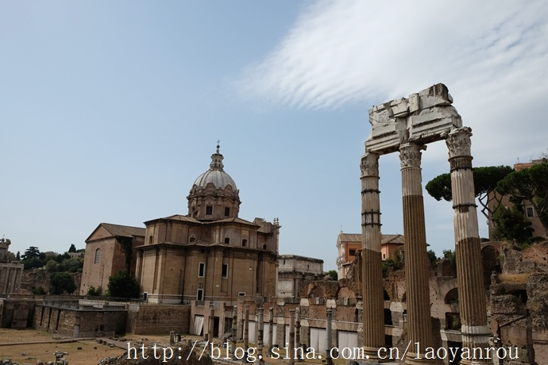
罗马之行甚至整个意大利之行的最后一个景点我们选择了《罗马假日》中经典桥段发生地“真理之口”，要不是有google导航、指示牌的指引以及长长的一溜排队人流的暗示，我们简直无法想象在这么一座不起眼的教堂外边的拱廊侧面竟隐藏着这尊声名远扬的人面井盖雕塑，尽管只是个唬小孩子的传说，但每个来此参观追寻奥黛丽赫本足迹的游客大概都免不了俗套地依次将手探入人面雕像的口中以验证自己是否说谎，在无数游人的抚摸下“真理之口”被已被磨得光滑锃亮，估计当时雕刻它的无名氏打死也不会想到自己原本雕来盖井口的大理石竟然以这样的方式被万众敬仰，其知名度甚至不亚于米开朗琪罗大师的雕塑，所以说要出名不一定靠多么高超精湛的技艺，很多时候还要靠点推泼助澜的小运气。 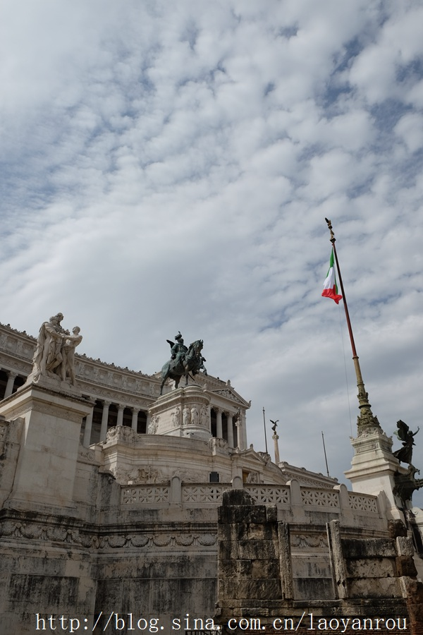 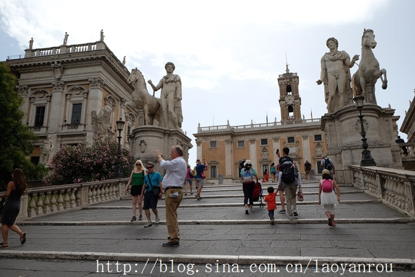 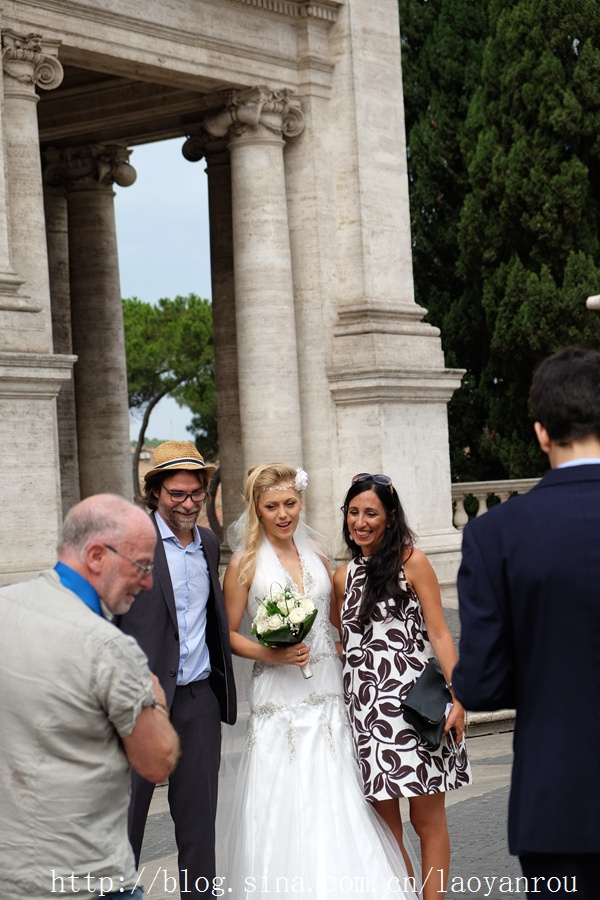 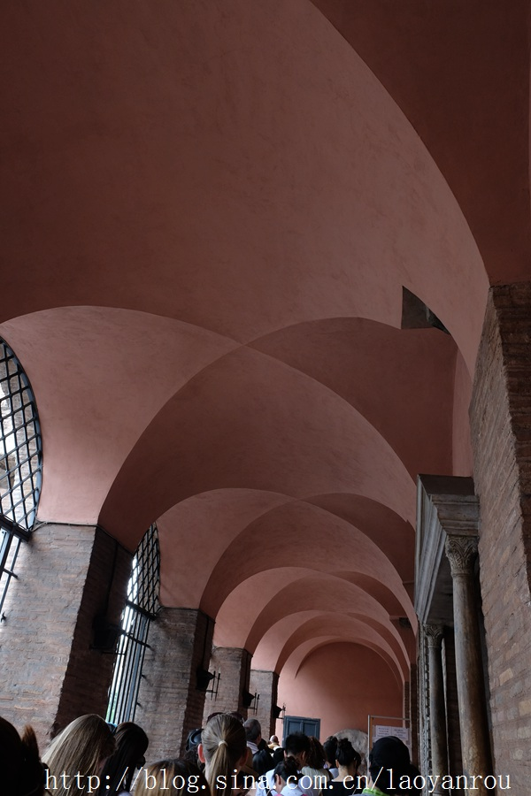 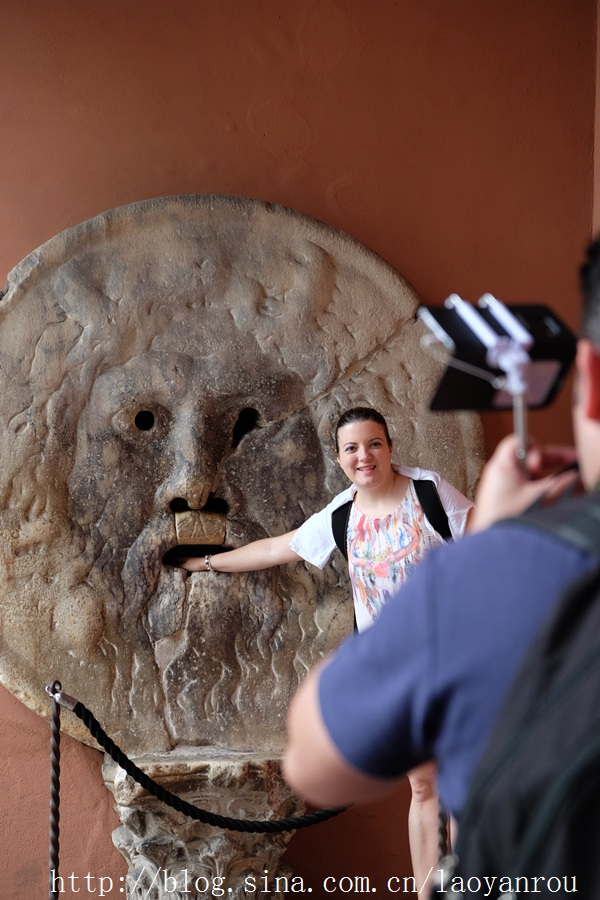 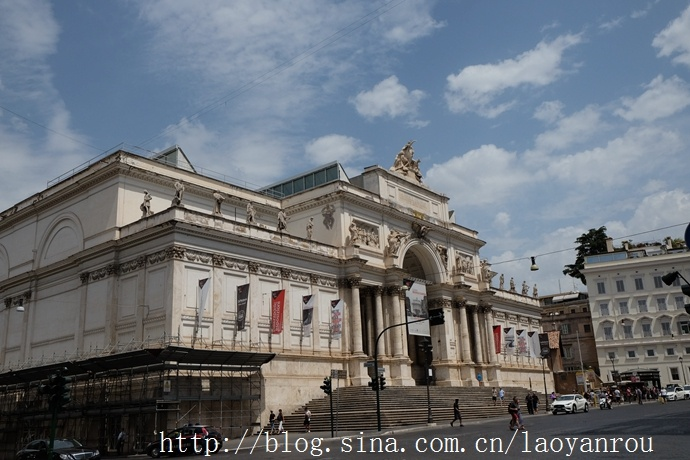 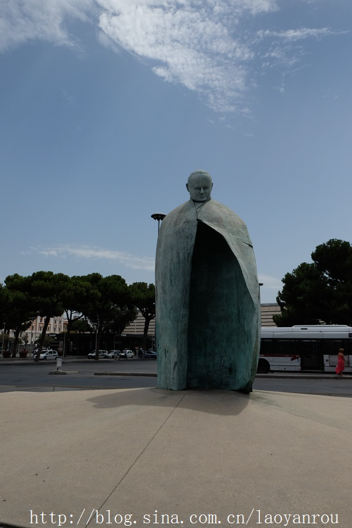 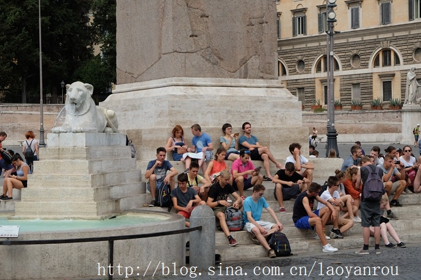 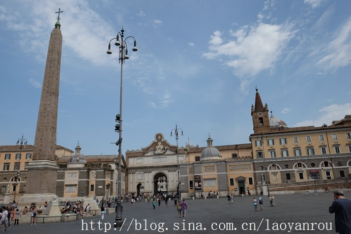
虎头蛇尾地将整个意大利之旅啰嗦完了，由于时间及水平有限感觉还是没能将意大利源远流长的历史传承、星光璀璨的文化艺术表述得淋漓尽致，意犹未尽之余还是期冀将来有机会能故地重游，细细品味、慢慢琢磨意大利点点滴滴的历史、文化瑰宝及葡萄美酒！